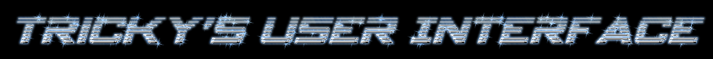

Module TUI_GALE by Tricky

This module will create a Lua object named "TUI" in Lua for use in the GALE Lua engine.
It basically creates a VM to which a screen object and a Lua script are bound together. The BlitzMax engine should basically call this VM over and over and Lua will automatically be called on a "Call-Back" base.
Every gadget should have a unique codename (which is a string). Whenever an 'action' is created the Lua function with the same codename prefixed with "TUI_ACTION_" (all in uppercase including the tag) will be called with the next parameters (idx,x,y). Though these parameters only contain nummeric values they will (unfortunately) be sent as strings as the underlying GALE engine is only able to send data in this manner (being it based on a modified version of MaxLua).
The best cause of action is to define all gadgets in the GALE_OnLoad() function which is automatically executed when a script is loaded. When you have any important unloading stuff to do you can best use TUI_UnLoad() in stead of GALE_UnLoad(), as in the latter function the gadgets may already be unloaded.
Globals Summary
Functions Summary
| TUI_GALE_Free |
Executes TUI_UnLoad() in the TUI_GALE object before releasing the object itself in order to be called by the garbage collector.
|
| TUI_GALE_Gadget |
Returns the gadget tied to a script set. If "kid" is set the child gadget will be returned, if not set the screen gadget is returned.
|
| TUI_GALE_Load |
Loads a Lua Script and ties the gadgets to it. In the MultiScripter you can find this one also back with the used tag prefixed by "TUI_". The object is also returned, however I'm not quite sure if you actually NEED that object.
|
Types Summary
Globals
| Global TUIG_JCR:TJCRDir |
| Description | This variable should contain the JCR dir list if the API is to load scripts. |
Functions
| Function TUI_GALE_Free(Tag$) 'TUIG:TUI_Gale Var) |
| Description | Executes TUI_UnLoad() in the TUI_GALE object before releasing the object itself in order to be called by the garbage collector. |
| Information | Please make sure that the Lua script tied to this object is not running at the time this feature is called. |
| Function TUI_GALE_Gadget:TUI_Gadget(STag$,kid$="") |
| Description | Returns the gadget tied to a script set. If "kid" is set the child gadget will be returned, if not set the screen gadget is returned. |
| Function TUI_GALE_Load:TUI_GALE(Tag$,JCR:TJCRDir,Script$) |
| Description | Loads a Lua Script and ties the gadgets to it. In the MultiScripter you can find this one also back with the used tag prefixed by "TUI_". The object is also returned, however I'm not quite sure if you actually NEED that object. |
Types
| Type TUI_GALE |
| Description | work type. |
| Field Screen:TUI_Gadget = TUI_CreateScreen() |
| Description | The Screen gadget. |
Module Information
| NameModule | Tricky's Units - TUI_GALE |
|---|
| Author | Jeroen Broks aka Tricky |
|---|
| Copyright | © Jeroen Petrus Broks |
|---|
| License | Mozilla Public License 2.0 |
|---|
| Last update | 16 Feb 2015 |
|---|